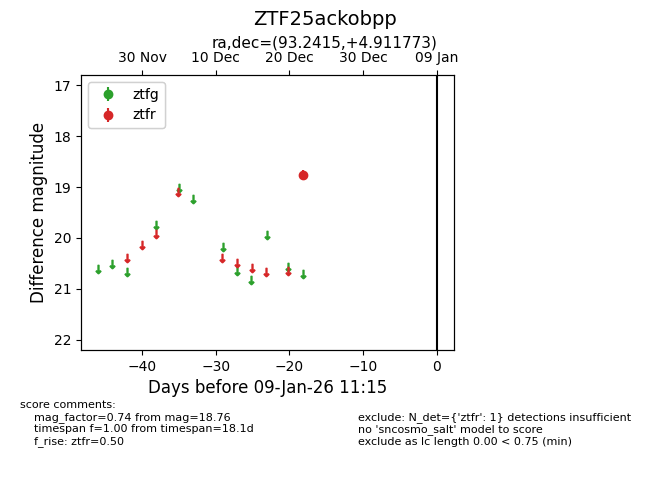
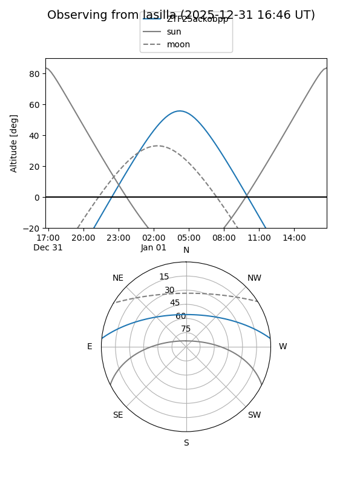
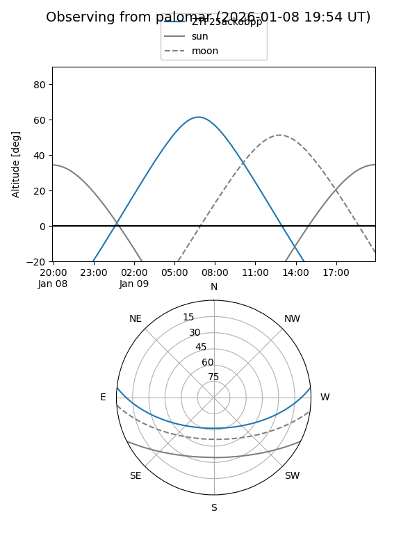

ZTF25ackobpp
Target ZTF25ackobpp at 2025-12-31 18:00
Aliases and brokers:
FINK: link
Lasair: link
ALeRCE: link
alt names
ZTF25ackobpp (ztf,fink_ztf)
Coordinates:
equatorial (ra, dec) = 93.2415,+4.91177
equatorial (HMS+DMS) = 06:12:57.96,+04:54:42.38
galactic (l, b) = (204.1299,-6.26399)
Flags:
Photometry:
last ztfr=18.76
1 ztfr detections
Lightcurve

Visibility


Additional plots